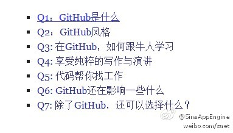

除了代码，GitHub还可以用来写作和演讲。//@邓侃:GitHub 沿袭的是 60 年代的创造性和理想主义。一个黑客这样介绍 GitHub，”这是方向，这是道路“。@吴曼Maureen //@InfoQ: 怪不得有人会说，GitHub是程序员最好的简历
@新浪云:
【 #SAE技术分享# 】《如何高效利用GitHub》这是一篇让人拍手称快的好文，文章着重讲述了GitHub的文化、技巧与影响。末尾的抒情更是亮点：美好的事物总是离不开被墙的命运，让我们静静地期待那一天的来临… 也让我们在各自行业的努力，让下一代、下一代、下一代…不再拥有这一天。 如何高效利用GitHub - 阳志平的网志
如何高效利用GitHub - 阳志平的网志
- 